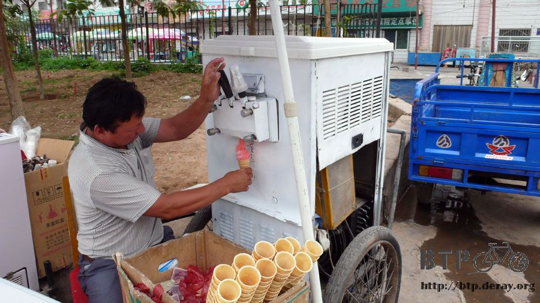

You! Wind! You win!
I guess God granted my wish of having a cool weather.
The heavy cloud provided a great shed, and turned the Sun from a fierce tiger to a cute little kitty.

I'd better bike faster for now, because my destination today is Turpan, the lowest point, also the hottest place in China
( Note: Turpan Depression is the second lowest exposed point on Earth, next to Dead Sea).
Since it is the lowest point, it was pretty easy for me, I just let go downhill most of the time.
With the help of the weather, even passing the burning Flaming Mountains area was not too bad anymore.


Flaming Mountains was magnificent, and humongous. There was nothing grown on it, though, no wonder it's called Flaming Mountains.
Enjoying the view, I effortlessly passed this entrance of the "Red Mountain", which was famous with its windy weather.
I thought I was pretty lucky today.

You can see lots of watermelons, Hami melons and raisins on sale along the way to Turpan.

Hmmmm…. I wondered what are these mud-structured THINGs?
Tens of thousands of them built in such a barren area.
(Note by the translator: These weird structures are used to air-dry grapes to make raisins)

Well, I had already seen the best part of Flaming Mountains. No need to spend money for the tour again, I guess.
I arrived at Turpan City at noon, much earlier than I expected. It is only 180 km away from Urumqi at this point.
Originally I thought it would take me two days from Turpan to Urumqi.
Since I was ahead of the schedule, I could bike a bit further this afternoon, so I can definitely enter Urumqi by tomorrow.
I had my lunch at the truck rest area before entering Turpan.
I really loved the Islamic food, and I ordered a stir-fried noodle and a meatball soup, Islamic style, both were exquisite.

After resting for half an hour, I took off again.

"Welcome to Turpan", my destination for today. Time to look for a hotel?
Turpan is also famous for its vine yard. Most grapes were small but seemed ripe, ready to make wine.
There is a vine yard opened to tourists, rated four stars in China.
It was a wonderful idea to take advantage of the trellis-climbing grapes.
Not only they were beautiful to look at, they also provided an excellent shade.
Most importantly, fruitful grapes were growing as great as they can be.

Five-cent ice cream! Tasted like watermelon flavor, very yummy.
The boss was a Uyghur, so I said "Lah-huh-may-teh"(meaning "Thank you") to show my appreciation to his ice cream in this hot hot day.

Wandering in the urban area until 3:30, I decided to continue on Rt 312.
My plan was to move another 20-30 km, to make tomorrow an even easier ride.
BUT…
I did not take it serious about the windy situation from Turpan to Urumqi,
especially the famous 30 km that was VERY windy, up to Force 12.
Before I entered the famous windy area, I did see the sign "No Bicycle".
As you can imagine, of course I totally ignored it.
Didn't you see me ride my Dido on every highway so far? What made this different from rest of the highways in China?
Well, let me tell you why. It is IMPOSSIBLE to ride a bike on this part of the National Highway.
Luckily, I got through the first 4 km by hiding behind a tricycle carrying piles of stuff.
After that, I was on my own.
Struggling, I managed to ride the bike little by little, but wobbling very badly at the same time.
Because there was no shoulder, and I was not able to steer my bike as I normally do.
I had to occupy the whole lane of the highway.
All the cars passed me dared NOT to honk, either. They just tried their best to pass by me safely.
I guessed they were very sacred of bumping me, or got bumped by me.
After officially entering the windy area, I could not even maintain my balance on the bike.
This got to be the strongest wind I had ever encountered in my whole life.
Compare to this, the Typhoons we had in Taiwan were just a piece of cake.
At the beginning, I was very excited and yelling,
"Come! Come! Let me see what else can you do?"
Around 5:00 in the afternoon, I knew there was no way I can continue to ride on the bike.
I WALKED with my bike instead. But even that was extremely difficult,
with wind came in from all directions except the one that can make my life easier.
After a while, I can't even walk with my bike. I had to lean on Dido with my waist and right foot,
and my left foot standing like a tilted A-shape with my body.
And this wired gesture could merely allow me to STAND with Dido in the wind.
How could I move forward, then?
This wind was not only fast and strong, but also very dry. I constantly had tears in my eyes.
My saliva was blown out of my mouth anytime I opened my mouth.
Just when I thought I had the worst wind ever,
I kept encountering the stronger and stronger wind every inch I move forward.
I lowered my head while walking with Dido, the wind blew away my sun glasses within 1/10 sec,and it fell on the ground within half a sec.
Of course I would want to get it back since it was the only pair of sun glasses
with corrected vision I had with me. But there was just no chance at all that I could do it.
I had to watch my sun glasses "gone with the wind" for the next 3 sec.
It rolled on the graveled road, downhill a bit, crossed to the other side of the road, and then disappeared, just like that, in front of me.
I started feeling scared by now. If the wind can take away my glasses on my head,
and I had to struggle so badly just to keep Dido by my side standing. Can I really walk this part through?
With no option, I told Dido," Don't worry. We will get through this together".
It took me 30 min to advance less than 1 km.
I even felt my clothes were going to torn apart by the wind,
like the man in the Aesop's Fable, "The Wind and the Sun", when he was facing the Wind's challenge.
I planned to walk like this until 9:00, if the situation was not improving and I could not find a place to stay,
I would hide into some area under the bridges for a night.
I didn't try to hitchhike, I just continue walked with Dido.
Honestly, with wind blowing like this, I couldn't move much at all if without Dido, I probably could not even stand still for more than 3 sec.
Leaning on Dido actually helped me lower my barycenter, also added the weight on me.
So even the progress was very slow, at least I was making some.
I told myself that I would not ask for help, I would not hitchhike at any point. I can make it, I really can.
So, here I was, walking like this, from 5-9. My hands were so sore by holding the bike very tightly in the wind.
It reminded me the time when I was in the military service training.
I was a MP (Military Police), and sometimes serviced in the motorcycle escort group.
Before we can proudly ride on this 1300c.c. motorcycle, we had to be able to run with it (not ON it),like the way I was walking with Dido.
Yamaha Royal-star was the motorcycle on the force at that time.
It weights 347 kg with the empty tank, so you can imagine how exhausted it was to run with this monster.
Well, now please move the camera back to ME walking (barely) with my Dido,
which weighted over 50 kg with all the bags but felt like heavier than that Yamaha Royal-star, against a windy weather like this.
No wonder the sign said, "No Bicycle". However, even if I was well aware of this windy situation,
I would still come up to face this challenge.
After 9, still no sign of any city/town, I was starting to look for a place to crash for tonight.
I looked around with my eyes filled with tears—by the wind, and I saw a truck parked around 200 meters away from me.
I knew, right at that moment, he was sent to save my life.
Although it was only 200 m away, it took me and Dido about 5 min to get there.
The driver looked pretty young,
"You have such an impeccable timing. Today is one of the worst days on this road. Come on now", he said.
We were 1 meter apart, but we had to yell to each other.
As if the words we said were blown away by this wind as soon as they left our mouth.
I stood by the truck and asked if there was any place to spend the night around here.
"Not within 10 km."
"Will the wind become gentler if I continue on this road?"
"It will only get worse. The wind will blow at you from the side or against you. It is impossible to pass that, if you walk with the bike"
Well, I got my answers, I surrendered—for now. I loaded all the bags into the truck, then the Dido.
The driver asked me where I was heading, I said "Urumqi".
"I was riding ON my bike since day one of this trip, and I am very proud of it.
I wouldn't get into your car if not for this windy situation. I really appreciate your kindness, but I really wish I can overcome this by myself".
His name is Baisong Chiang. He carried a truck full of watermelons from Turpan to sell at Urumqi, so he offered to give me a ride to Urumqi.
"How long can we arrive at Dabancheng? I think I can ride from there to Urumqi myself".
"It is also very windy from Dabancheng to Urumqi. What if you got stuck there again? Why not let me take you all the way to Urumqi".

Baisong was younger than me by 2 years. He has already married and with a baby.
I was very happy for him when he talked about his kid.
Sitting inside the truck, which was also greatly affected by the wind, I saw the beautiful sight through the window,
feeling very disappointed that I was not able to bike Dido through this part of my journey.
Baisong is an interesting person, and he likes to have his freedom, just like me. He was from Henan province,
but he left home to Turpan to be independent by the age of 15.
He didn't like to work for others, so he learned to open his own business.
Baisong doesn't make a lot of money, but he gets to work for himself, and manages to support his own family.
Other than transporting melons, he also grows Hami melons with some farmers.
They calculate the time so that when the melons are ready for fall harvest,
which is around mid August, their Hami melons would be the only ones available on the market in China.
These melons are sent to Beijing to sell and make extra 70-80,000 RMB for each of them.

When we passed the tollbooth, I asked Baisong if I can pay for the toll.
He said it was not a big deal at all. We are friends, and that's what friends are for.
I mentioned Dabancheng earlier, so Baisong detoured to show me the city.
He said, because of the famous folks song, "The girls from Dabancheng",
everybody wants to come here to visit this city at least once in his life time, but,
"You will regret for the rest of your life if you never get a chance to visit.
But after you visit, you will regret for the rest of your life that you ever get a chance to visit".
However, I still asked Baisong to drop me off here.
Maybe the road ahead is as difficult as he said, but I wanted to give it another try. I wanted to BIKE to Urumqi by myself.
I really appreciated Baisong's kindness and help, so that I did not have to sleep under some bridge of some sort.
There is nothing I can say to express my gratitude, especially his "That's what friends are for"; I will always remember that, Baisong. Thank you.
After around 50 km later, we arrived at Dabancheng at 10:00 at night.
The first thing was to look for a place to sleep, and I found one with 8 RMB a night.

The lady said it was raining at Urumqi, that's why on the way to Dabancheng was having such a big storm.
She wondered what the weather would be like tomorrow.
The boss, on the other hand, was pretty drunk already.
He kept threatening me that he would call police to arrest me if I can't show him my ID.
I asked him to go to sleep early and I will have some drink with him tomorrow.
The 8 RMB room was not too bad, except it was a bit far away from bathroom and water fountain.

The second thing on my list was, dinner.
I found a BBQ restaurant nearby. Like everybody else here, I also ordered a yogurt-like drink,
it was called "sour milk" in Chinese, but it was not sour at all. Added some sugar, it tasted pretty good, actually.
Then the real food was here, BBQ meat and cold beer. I was having time of my life.
Right there, I told myself, if the weather is bad tomorrow, I shall stay in Dabancheng for one more day.
If the weather is really good tomorrow, I shall also stay in Dabancheng for one more day.
My philosophy is: I will have great moments to remember this trip by if I take it slow once a while when the "place" is right.
Otherwise, all I can talk about when I am old will be how many miles I accumulated everyday on my GPS tracker in this whole entire trip.
What's the point then?